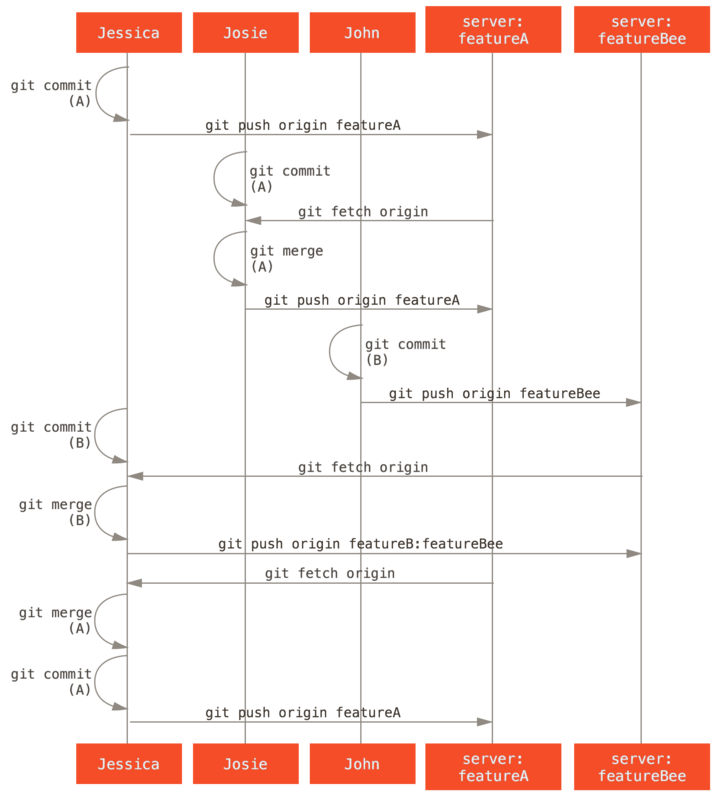

第六章：分布式Git
你现在拥有了一个远程 Git 版本库，能为所有开发者共享代码提供服务，在一个本地工作流程下，你也已经熟悉了基本 Git 命令。你现在可以学习如何利用 Git 提供的一些分布式工作流程了。
这一章中，你将会学习如何作为贡献者或整合者，在一个分布式协作的环境中使用 Git。 你会学习为一个项目成功地贡献代码，并接触一些最佳实践方式，让你和项目的维护者能轻松地完成这个过程。另外，你也会学到如何管理有很多开发者提交贡献的项目。
1. 分布式工作流程
同传统的集中式版本控制系统（CVCS）不同，Git 的分布式特性使得开发者间的协作变得更加灵活多样。 在集中式系统中，每个开发者就像是连接在集线器上的节点，彼此的工作方式大体相像。 而在 Git 中，每个开发者同时扮演着节点和集线器的角色——也就是说，每个开发者既可以将自己的代码贡献到其他的仓库中，同时也能维护自己的公开仓库，让其他人可以在其基础上工作并贡献代码。 由此，Git 的分布式协作可以为你的项目和团队衍生出种种不同的工作流程，接下来的章节会介绍几种利用了 Git 的这种灵活性的常见应用方式。 我们将讨论每种方式的优点以及可能的缺点；你可以选择使用其中的某一种，或者将它们的特性混合搭配使用。
1.1 集中式工作流
集中式系统中通常使用的是单点协作模型——集中式工作流。 一个中心集线器，或者说仓库，可以接受代码，所有人将自己的工作与之同步。 若干个开发者则作为节点——也就是中心仓库的消费者——并且与其进行同步。

这意味着如果两个开发者从中心仓库克隆代码下来，同时作了一些修改，那么只有第一个开发者可以顺利地把数据推送回共享服务器。 第二个开发者在推送修改之前，必须先将第一个人的工作合并进来，这样才不会覆盖第一个人的修改。 这和 Subversion （或任何 CVCS）中的概念一样，而且这个模式也可以很好地运用到 Git 中。
如果在公司或者团队中，你已经习惯了使用这种集中式工作流程，完全可以继续采用这种简单的模式。 只需要搭建好一个中心仓库，并给开发团队中的每个人推送数据的权限，就可以开展工作了。Git 不会让用户覆盖彼此的修改。 例如 John 和 Jessica 同时开始工作。 John 完成了他的修改并推送到服务器。 接着 Jessica 尝试提交她自己的修改，却遭到服务器拒绝。 她被告知她的修改正通过非快进式（non-fast-forward）的方式推送，只有将数据抓取下来并且合并后方能推送。 这种模式的工作流程的使用非常广泛，因为大多数人对其很熟悉也很习惯。
当然这并不局限于小团队。 利用 Git 的分支模型，通过同时在多个分支上工作的方式，即使是上百人的开发团队也可以很好地在单个项目上协作。
1.2 集成管理者工作流
Git 允许多个远程仓库存在，使得这样一种工作流成为可能：每个开发者拥有自己仓库的写权限和其他所有人仓库的读权限。 这种情形下通常会有个代表“官方”项目的权威的仓库。 要为这个项目做贡献，你需要从该项目克隆出一个自己的公开仓库，然后将自己的修改推送上去。 接着你可以请求官方仓库的维护者拉取更新合并到主项目。 维护者可以将你的仓库作为远程仓库添加进来，在本地测试你的变更，将其合并入他们的分支并推送回官方仓库。 这一流程的工作方式如下所示（见集成管理者工作流）：
- 项目维护者推送到主仓库。
- 贡献者克隆此仓库，做出修改。
- 贡献者将数据推送到自己的公开仓库。
- 贡献者给维护者发送邮件，请求拉取自己的更新。
- 维护者在自己本地的仓库中，将贡献者的仓库加为远程仓库并合并修改。
- 维护者将合并后的修改推送到主仓库。

这是 GitHub 和 GitLab 等集线器式（hub-based）工具最常用的工作流程。人们可以容易地将某个项目派生成为自己的公开仓库，向这个仓库推送自己的修改，并为每个人所见。 这么做最主要的优点之一是你可以持续地工作，而主仓库的维护者可以随时拉取你的修改。 贡献者不必等待维护者处理完提交的更新——每一方都可以按照自己的节奏工作。
1.3 司令官与副官工作流
这其实是多仓库工作流程的变种。 一般拥有数百位协作开发者的超大型项目才会用到这样的工作方式，例如著名的 Linux 内核项目。 被称为副官（lieutenant）的各个集成管理者分别负责集成项目中的特定部分。 所有这些副官头上还有一位称为司令官（dictator）的总集成管理者负责统筹。 司令官维护的仓库作为参考仓库，为所有协作者提供他们需要拉取的项目代码。 整个流程看起来是这样的（见司令官与副官工作流）：
- 普通开发者在自己的特性分支上工作，并根据
master分支进行变基。 这里是司令官的master分支。 - 副官将普通开发者的特性分支合并到自己的
master分支中。 - 司令官将所有副官的
master分支并入自己的master分支中。 - 司令官将集成后的
master分支推送到参考仓库中，以便所有其他开发者以此为基础进行变基。

这种工作流程并不常用，只有当项目极为庞杂，或者需要多级别管理时，才会体现出优势。 利用这种方式，项目总负责人（即司令官）可以把大量分散的集成工作委托给不同的小组负责人分别处理，然后在不同时刻将大块的代码子集统筹起来，用于之后的整合。
1.4 工作流程总结
上面介绍了在 Git 等分布式系统中经常使用的工作流程，但是在实际的开发中，你会遇到许多可能适合你的特定工作流程的变种。 现在你应该已经清楚哪种工作流程组合可能比较适合你了，我们会给出一些如何扮演不同工作流程中主要角色的更具体的例子。 下一节我们将会学习为项目做贡献的一些常用模式。
2. 向一个项目贡献
描述如何向一个项目贡献的主要困难在于完成贡献有很多不同的方式。 因为 Git 非常灵活，人们可以通过不同的方式来一起工作，所以描述应该如何贡献并不是非常准确——每一个项目都有一点儿不同。 影响因素包括活跃贡献者的数量、选择的工作流程、提交权限与可能包含的外部贡献方法。
第一个影响因素是活跃贡献者的数量——积极地向这个项目贡献代码的用户数量以及他们的贡献频率。 在许多情况下，你可能会有两三个开发者一天提交几次，对于不活跃的项目可能更少。 对于大一些的公司或项目，开发者的数量可能会是上千，每天都有成百上千次提交。 这很重要，因为随着开发者越来越多，在确保你的代码能干净地应用或轻松地合并时会遇到更多问题。 提交的改动可能表现为过时的，也可能在你正在做改动或者等待改动被批准应用时被合并入的工作严重损坏。 如何保证代码始终是最新的，并且提交始终是有效的？
下一个影响因素是项目使用的工作流程。 它是中心化的吗，即每一个开发者都对主线代码有相同的写入权限？ 项目是否有一个检查所有补丁的维护者或整合者？ 是否所有的补丁是同行评审后批准的？ 你是否参与了那个过程？ 是否存在副官系统，你必须先将你的工作提交到上面？
下一个问题是提交权限。 是否有项目的写权限会使向项目贡献所需的流程有极大的不同。 如果没有写权限，项目会选择何种方式接受贡献的工作？ 是否甚至有一个如何贡献的规范？ 你一次贡献多少工作？ 你多久贡献一次？
所有这些问题都会影响实际如何向一个项目贡献，以及对你来说哪些工作流程更适合或者可用。 我们将会由浅入深，通过一系列用例来讲述其中的每一个方面；从这些例子应该能够建立实际中你需要的特定工作流程。
2.1 提交准则
在我们开始查看特定的用例前，这里有一个关于提交信息的快速说明。 有一个好的创建提交的准则并且坚持使用会让与 Git 工作和与其他人协作更容易。 Git 项目提供了一个文档，其中列举了关于创建提交到提交补丁的若干好的提示——可以在 Git 源代码中的 Documentation/SubmittingPatches 文件中阅读它。
首先，你不会想要把空白错误（根据 git help diff 的描述，结合下面给出的图片，空白错误是指行尾的空格、Tab 制表符，和行首空格后跟 Tab 制表符的行为）提交上去。 Git 提供了一个简单的方式来检查这点——在提交前，运行 git diff --check，它将会找到可能的空白错误并将它们为你列出来。

如果在提交前运行那个命令，可以知道提交中是否包含可能会使其他开发者恼怒的空白问题。
接下来，尝试让每一个提交成为一个逻辑上的独立变更集。 如果可以，尝试让改动可以理解——不要在整个周末编码解决五个问题，然后在周一时将它们提交为一个巨大的提交。 即使在周末期间你无法提交，在周一时使用暂存区域将你的工作最少拆分为每个问题一个提交，并且为每一个提交附带一个有用的信息。 如果其中一些改动修改了同一个文件，尝试使用 git add --patch 来部分暂存文件（在 交互式暂存 中有详细介绍）。 不管你做一个或五个提交，只要所有的改动是在同一时刻添加的，项目分支末端的快照就是独立的，使同事开发者必须审查你的改动时尽量让事情容易些。 当你之后需要时这个方法也会使拉出或还原一个变更集更容易些。 重写历史 描述了重写历史与交互式暂存文件的若干有用的 Git 技巧——在将工作发送给其他人前使用这些工具来帮助生成一个干净又易懂的历史。
最后一件要牢记的事是提交信息。 有一个创建优质提交信息的习惯会使 Git 的使用与协作容易的多。 一般情况下，信息应当以少于 50 个字符（25个汉字）的单行开始且简要地描述变更，接着是一个空白行，再接着是一个更详细的解释。 Git 项目要求一个更详细的解释，包括做改动的动机和它的实现与之前行为的对比——这是一个值得遵循的好规则。 在这些信息中使用现在时态祈使语气也是一个好想法。 换句话说，使用命令。 使用 “Add tests for” 而不是 “I added tests for” 或 “Adding tests for”。 这里是一份最初由 Tim Pope 写的模板：
修改的摘要（50 个字符或更少）
如果必要的话，加入更详细的解释文字。在
大概 72 个字符的时候换行。在某些情形下，
第一行被当作一封电子邮件的标题，剩下的
文本作为正文。分隔摘要与正文的空行是
必须的（除非你完全省略正文）；如果你将
两者混在一起，那么类似变基等工具无法
正常工作。
空行接着更进一步的段落。
- 句号也是可以的。
- 项目符号可以使用典型的连字符或星号
前面一个空格，之间用空行隔开，
但是可以依据不同的惯例有所不同。
如果你所有的提交信息看起来都像这样，对你与跟你工作在一起的其他开发者来说事情会变得非常容易。 Git 项目有一个良好格式化的提交信息——尝试在那儿运行 git log --no-merges 来看看漂亮的格式化的项目提交历史像什么样。
在接下来的例子中，以及贯穿本书大部分，出于简洁性的原因本书不会有像这样漂亮格式的信息；相反，我们使用 -m 选项的 git commit。 照我们说的做，而不是照我们做的做。
2.2 私有小型团队
你可能会遇到的最简单的配置是有一两个其他开发者的私有项目。 “私有” 在这个上下文中，意味着闭源——不可以从外面的世界中访问到。 你和其他的开发者都有仓库的推送权限。
在这个环境下，可以采用一个类似使用 Subversion 或其他集中式的系统时会使用的工作流程。 依然可以得到像离线提交、非常容易地新建分支与合并分支等高级功能，但是工作流程可以是很简单的；主要的区别是合并发生在客户端这边而不是在提交时发生在服务器那边。 让我们看看当两个开发者在一个共享仓库中一起工作时会是什么样子。 第一个开发者，John，克隆了仓库，做了改动，然后本地提交。 （为了缩短这些例子长度，协议信息已被替换为 ...。）
# John's Machine
$ git clone john@githost:simplegit.git
Initialized empty Git repository in /home/john/simplegit/.git/
...
$ cd simplegit/
$ vim lib/simplegit.rb
$ git commit -am 'removed invalid default value'
[master 738ee87] removed invalid default value
1 files changed, 1 insertions(+), 1 deletions(-)
第二个开发者，Jessica，做了同样的事情——克隆仓库并提交了一个改动：
# Jessica's Machine
$ git clone jessica@githost:simplegit.git
Initialized empty Git repository in /home/jessica/simplegit/.git/
...
$ cd simplegit/
$ vim TODO
$ git commit -am 'add reset task'
[master fbff5bc] add reset task
1 files changed, 1 insertions(+), 0 deletions(-)
现在，Jessica 把她的工作推送到服务器上：
# Jessica's Machine
$ git push origin master
...
To jessica@githost:simplegit.git
1edee6b..fbff5bc master -> master
John 也尝试推送他的改动：
# John's Machine
$ git push origin master
To john@githost:simplegit.git
! [rejected] master -> master (non-fast forward)
error: failed to push some refs to 'john@githost:simplegit.git'
不允许 John 推送是因为在同一时间 Jessica 已经推送了。 如果之前习惯于用 Subversion 那么理解这点特别重要，因为你会注意到两个开发者并没有编辑同一个文件。 尽管 Subversion 会对编辑的不同文件在服务器上自动进行一次合并，但 Git 要求你在本地合并提交。 John 必须抓取 Jessica 的改动并合并它们，才能被允许推送。
$ git fetch origin
...
From john@githost:simplegit
+ 049d078...fbff5bc master -> origin/master
在这个时候，John 的本地仓库看起来像这样：

John 有一个引用指向 Jessica 推送上去的改动，但是他必须将它们合并入自己的工作中之后才能被允许推送。
$ git merge origin/master
Merge made by recursive.
TODO | 1 +
1 files changed, 1 insertions(+), 0 deletions(-)
合并进行地很顺利—— John 的提交历史现在看起来像这样：

现在，John 可以测试代码，确保它依然正常工作，然后他可以把合并的新工作推送到服务器上：
$ git push origin master
...
To john@githost:simplegit.git
fbff5bc..72bbc59 master -> master
最终，John 的提交历史看起来像这样：

在此期间，Jessica 在一个特性分支上工作。 她创建了一个称作 issue54 的特性分支并且在那个分支上做了三次提交。 她还没有抓取 John 的改动，所以她的提交历史看起来像这样：

Jessica 想要与 John 同步，所以她进行了抓取操作：
# Jessica's Machine
$ git fetch origin
...
From jessica@githost:simplegit
fbff5bc..72bbc59 master -> origin/master
那会同时拉取 John 推送的工作。 Jessica 的历史现在看起来像这样：

Jessica 认为她的特性分支已经准备好了，但是她想要知道必须合并什么进入她的工作才能推送。 她运行 git log 来找出：
$ git log --no-merges issue54..origin/master
commit 738ee872852dfaa9d6634e0dea7a324040193016
Author: John Smith <jsmith@example.com>
Date: Fri May 29 16:01:27 2009 -0700
removed invalid default value
issue54..origin/master 语法是一个日志过滤器，要求 Git 只显示所有在后面分支（在本例中是 origin/master）但不在前面分支（在本例中是 issue54）的提交的列表。 我们将会在 提交区间 中详细介绍这个语法。
目前，我们可以从输出中看到有一个 John 生成的但是 Jessica 还没有合并入的提交。 如果她合并 origin/master，也就是说将会修改她的本地工作的那个单个提交。
现在，Jessica 可以合并她的特性工作到她的 master 分支，合并 John 的工作（origin/master）进入她的 master 分支，然后再次推送回服务器。 首先，为了整合所有这些工作她切换回她的 master 分支。
$ git checkout master
Switched to branch 'master'
Your branch is behind 'origin/master' by 2 commits, and can be fast-forwarded.
她既可以先合并 origin/master 也可以先合并 issue54 ——它们都是上游，所以顺序并没有关系。 不论她选择的顺序是什么最终的结果快照是完全一样的；只是历史会有一点轻微的区别。 她选择先合并入 issue54：
$ git merge issue54
Updating fbff5bc..4af4298
Fast forward
README | 1 +
lib/simplegit.rb | 6 +++++-
2 files changed, 6 insertions(+), 1 deletions(-)
没有发生问题；如你所见它是一次简单的快进。 现在 Jessica 合并入 John 的工作（origin/master）：
$ git merge origin/master
Auto-merging lib/simplegit.rb
Merge made by recursive.
lib/simplegit.rb | 2 +-
1 files changed, 1 insertions(+), 1 deletions(-)
每一个文件都干净地合并了，Jessica 的历史看起来像这样：

现在 origin/master 是可以从 Jessica 的 master 分支到达的，所以她应该可以成功地推送（假设同一时间 John 并没有再次推送）：
$ git push origin master
...
To jessica@githost:simplegit.git
72bbc59..8059c15 master -> master
每一个开发者都提交了几次并成功地合并了其他人的工作。

这是一个最简单的工作流程。 你通常在一个特性分支工作一会儿，当它准备好整合时合并回你的 master 分支。 当想要共享工作时，将其合并回你自己的 master 分支，如果有改动的话然后抓取并合并 origin/master，最终推送到服务器上的 master 分支。 通常顺序像这样：

2.3 私有管理团队
在接下来的情形中，你会看到大型私有团队中贡献者的角色。 在你将学习到的这种工作环境中，小组基于特性进行协作，这些团队的贡献将会由其他人整合。
让我们假设 John 与 Jessica 在一个特性上工作，同时 Jessica 与 Josie 在第二个特性上工作。 在本例中，公司使用了一种整合-管理者工作流程，独立小组的工作只能被特定的工程师整合，主仓库的 master 分支只能被那些工程师更新。 在这种情况下，所有的工作都是在基于团队的分支上完成的并且稍后会被整合者拉到一起。
因为 Jessica 在两个特性上工作，并且平行地与两个不同的开发者协作，让我们跟随她的工作流程。 假设她已经克隆了仓库，首先决定在 featureA 上工作。 她为那个特性创建了一个新分支然后在那做了一些工作：
# Jessica's Machine
$ git checkout -b featureA
Switched to a new branch 'featureA'
$ vim lib/simplegit.rb
$ git commit -am 'add limit to log function'
[featureA 3300904] add limit to log function
1 files changed, 1 insertions(+), 1 deletions(-)
在这个时候，她需要将工作共享给 John，所以她推送了 featureA 分支的提交到服务器上。 Jessica 没有 master 分支的推送权限——只有整合者有——所以为了与 John 协作必须推送另一个分支。
$ git push -u origin featureA
...
To jessica@githost:simplegit.git
* [new branch] featureA -> featureA
Jessica 向 John 发邮件告诉他已经推送了一些工作到 featureA 分支现在可以看一看。 当她等待 John 的反馈时，Jessica 决定与 Josie 开始在 featureB 上工作。 为了开始工作，她基于服务器的 master 分支开始了一个新分支。
# Jessica's Machine
$ git fetch origin
$ git checkout -b featureB origin/master
Switched to a new branch 'featureB'
现在，Jessica 在 featureB 分支上创建了几次提交：
$ vim lib/simplegit.rb
$ git commit -am 'made the ls-tree function recursive'
[featureB e5b0fdc] made the ls-tree function recursive
1 files changed, 1 insertions(+), 1 deletions(-)
$ vim lib/simplegit.rb
$ git commit -am 'add ls-files'
[featureB 8512791] add ls-files
1 files changed, 5 insertions(+), 0 deletions(-)
Jessica 的仓库看起来像这样：

她准备好推送工作了，但是一封来自 Josie 的邮件告知一些初始工作已经被推送到服务器上的 featureBee 上了。 Jessica 在能推送到服务器前首先需要将那些改动与她自己的合并。 然后她可以通过 git fetch 抓取 Josie 的改动：
$ git fetch origin
...
From jessica@githost:simplegit
* [new branch] featureBee -> origin/featureBee
Jessica 现在可以通过 git merge 将其合并到她做的工作中：
$ git merge origin/featureBee
Auto-merging lib/simplegit.rb
Merge made by recursive.
lib/simplegit.rb | 4 ++++
1 files changed, 4 insertions(+), 0 deletions(-)
有点儿问题——她需要将在 featureB 分支上合并的工作推送到服务器上的 featureBee 分支。 她可以通过指定本地分支加上冒号（:）加上远程分支给 git push 命令来这样做：
$ git push -u origin featureB:featureBee
...
To jessica@githost:simplegit.git
fba9af8..cd685d1 featureB -> featureBee
这称作一个 引用规格。 查看引用规格了解关于 Git 引用规格与通过它们可以做的不同的事情的详细讨论。 也要注意 -u 标记；这是 --set-upstream 的简写，该标记会为之后轻松地推送与拉取配置分支。
紧接着，John 发邮件给 Jessica 说他已经推送了一些改动到 featureA 分支并要求她去验证它们。 她运行一个 git fetch 来拉取下那些改动：
$ git fetch origin
...
From jessica@githost:simplegit
3300904..aad881d featureA -> origin/featureA
然后，通过 git log 她可以看到哪些发生了改变：
$ git log featureA..origin/featureA
commit aad881d154acdaeb2b6b18ea0e827ed8a6d671e6
Author: John Smith <jsmith@example.com>
Date: Fri May 29 19:57:33 2009 -0700
changed log output to 30 from 25
最终，她合并 John 的工作到她自己的 featureA 分支：
$ git checkout featureA
Switched to branch 'featureA'
$ git merge origin/featureA
Updating 3300904..aad881d
Fast forward
lib/simplegit.rb | 10 +++++++++-
1 files changed, 9 insertions(+), 1 deletions(-)
Jessica 想要轻微调整一些东西，所以她再次提交然后将其推送回服务器：
$ git commit -am 'small tweak'
[featureA 774b3ed] small tweak
1 files changed, 1 insertions(+), 1 deletions(-)
$ git push
...
To jessica@githost:simplegit.git
3300904..774b3ed featureA -> featureA
Jessica 的提交历史现在看起来像这样：

Jessica、Josie 与 John 通知整合者在服务器上的 featureA 与 featureBee 分支准备好整合到主线中了。 在整合者合并这些分支到主线后，一次抓取会拿下来一个新的合并提交，使历史看起来像这样：

许多团队切换到 Git 是因为这一允许多个团队并行工作、并在之后合并不同工作的能力。 团队中更小一些的子小组可以通过远程分支协作而不必影响或妨碍整个团队的能力是 Git 的一个巨大优势。 在这儿看到的工作流程顺序类似这样：

2.4 派生的公开项目
向公开项目做贡献有一点儿不同。 因为没有权限直接更新项目的分支，你必须用其他办法将工作给维护者。 第一个例子描述在支持简单派生的 Git 托管上使用派生来做贡献。 许多托管站点支持这个功能（包括 GitHub、BitBucket、Google Code、repo.or.cz 等等），许多项目维护者期望这种风格的贡献。 下一节会讨论偏好通过邮件接受贡献补丁的项目。
首先，你可能想要克隆主仓库，为计划贡献的补丁或补丁序列创建一个特性分支，然后在那儿做工作。 顺序看起来基本像这样：
$ git clone (url)
$ cd project
$ git checkout -b featureA
# (work)
$ git commit
# (work)
$ git commit
Notes:你可能会想要使用
rebase -i来将工作压缩成一个单独的提交，或者重排提交中的工作使补丁更容易被维护者审核——查看重写历史了解关于交互式变基的更多信息。
当你的分支工作完成后准备将其贡献回维护者，去原始项目中然后点击 “Fork” 按钮，创建一份自己的可写的项目派生仓库。 然后需要添加这个新仓库 URL 为第二个远程仓库，在本例中称作 myfork：
$ git remote add myfork (url)
然后需要推送工作到上面。 相对于合并到主分支再推送上去，推送你正在工作的特性分支到仓库上更简单。 原因是工作如果不被接受或者是被拣选的，就不必回退你的 master 分支。 如果维护者合并、变基或拣选你的工作，不管怎样你最终会通过拉取他们的仓库找回来你的工作。
$ git push -u myfork featureA
当工作已经被推送到你的派生后，你需要通知维护者。 这通常被称作一个拉取请求（pull request），你既可以通过网站生成它—— GitHub 有它自己的 Pull Request 机制，我们将会在 [GitHub] 介绍——也可以运行 git request-pull 命令然后手动地将输出发送电子邮件给项目的维护者。
request-pull 命令接受特性分支拉入的基础分支，以及它们拉入的 Git 仓库 URL，输出请求拉入的所有修改的总结。 例如，Jessica 想要发送给 John 一个拉取请求，她已经在刚刚推送的分支上做了两次提交。她可以运行这个：
$ git request-pull origin/master myfork
The following changes since commit 1edee6b1d61823a2de3b09c160d7080b8d1b3a40:
John Smith (1):
added a new function
are available in the git repository at:
git://githost/simplegit.git featureA
Jessica Smith (2):
add limit to log function
change log output to 30 from 25
lib/simplegit.rb | 10 +++++++++-
1 files changed, 9 insertions(+), 1 deletions(-)
这个输出可以被发送给维护者——它告诉他们工作是从哪个分支开始、归纳的提交与从哪里拉入这些工作。
在一个你不是维护者的项目上，通常有一个总是跟踪 origin/master 的 master 分支会很方便，在特性分支上做工作是因为如果它们被拒绝时你可以轻松地丢弃。 如果同一时间主仓库移动了然后你的提交不再能干净地应用，那么使工作主题独立于特性分支也会使你变基（rebase）工作时更容易。 例如，你想要提供第二个特性工作到项目，不要继续在刚刚推送的特性分支上工作——从主仓库的 master 分支重新开始：
$ git checkout -b featureB origin/master
# (work)
$ git commit
$ git push myfork featureB
# (email maintainer)
$ git fetch origin
现在，每一个特性都保存在一个贮藏库中——类似于补丁队列——可以重写、变基与修改而不会让特性互相干涉或互相依赖，像这样：

假设项目维护者已经拉取了一串其他补丁，然后尝试拉取你的第一个分支，但是没有干净地合并。 在这种情况下，可以尝试变基那个分支到 origin/master 的顶部，为维护者解决冲突，然后重新提交你的改动：
$ git checkout featureA
$ git rebase origin/master
$ git push -f myfork featureA
这样会重写你的历史，现在看起来像是featureA 工作之后的提交历史

因为你将分支变基了，所以必须为推送命令指定 -f 选项，这样才能将服务器上有一个不是它的后代的提交的 featureA 分支替换掉。 一个替代的选项是推送这个新工作到服务器上的一个不同分支（可能称作 featureAv2）。
让我们看一个更有可能的情况：维护者看到了你的第二个分支上的工作并且很喜欢其中的概念，但是想要你修改一下实现的细节。 你也可以利用这次机会将工作基于项目现在的 master 分支。 你从现在的 origin/master 分支开始一个新分支，在那儿压缩 featureB 的改动，解决任何冲突，改变实现，然后推送它为一个新分支。
$ git checkout -b featureBv2 origin/master
$ git merge --squash featureB
# (change implementation)
$ git commit
$ git push myfork featureBv2
--squash 选项接受被合并的分支上的所有工作，并将其压缩至一个变更集，使仓库变成一个真正的合并发生的状态，而不会真的生成一个合并提交。 这意味着你的未来的提交将会只有一个父提交，并允许你引入另一个分支的所有改动，然后在记录一个新提交前做更多的改动。 同样 --no-commit 选项在默认合并过程中可以用来延迟生成合并提交。
现在你可以给维护者发送一条消息，表示你已经做了要求的修改然后他们可以在你的 featureBv2 分支上找到那些改动。

2.5 通过邮件的公开项目
许多项目建立了接受补丁的流程——需要检查每一个项目的特定规则，因为它们之间有区别。 因为有几个历史悠久的、大型的项目会通过一个开发者的邮件列表接受补丁，现在我们将会通过一个例子来演示。
工作流程与之前的用例是类似的——你为工作的每一个补丁序列创建特性分支。 区别是如何提交它们到项目中。 生成每一个提交序列的电子邮件版本然后邮寄它们到开发者邮件列表，而不是派生项目然后推送到你自己的可写版本。
$ git checkout -b topicA
# (work)
$ git commit
# (work)
$ git commit
现在有两个提交要发送到邮件列表。 使用 git format-patch 来生成可以邮寄到列表的 mbox 格式的文件——它将每一个提交转换为一封电子邮件，提交信息的第一行作为主题，剩余信息与提交引入的补丁作为正文。 它有一个好处是使用 format-patch 生成的一封电子邮件应用的提交正确地保留了所有的提交信息。
$ git format-patch -M origin/master
0001-add-limit-to-log-function.patch
0002-changed-log-output-to-30-from-25.patch
format-patch 命令打印出它创建的补丁文件名字。 -M 开关告诉 Git 查找重命名。 文件最后看起来像这样：
$ cat 0001-add-limit-to-log-function.patch
From 330090432754092d704da8e76ca5c05c198e71a8 Mon Sep 17 00:00:00 2001
From: Jessica Smith <jessica@example.com>
Date: Sun, 6 Apr 2008 10:17:23 -0700
Subject: [PATCH 1/2] add limit to log function
Limit log functionality to the first 20
---
lib/simplegit.rb | 2 +-
1 files changed, 1 insertions(+), 1 deletions(-)
diff --git a/lib/simplegit.rb b/lib/simplegit.rb
index 76f47bc..f9815f1 100644
--- a/lib/simplegit.rb
+++ b/lib/simplegit.rb
@@ -14,7 +14,7 @@ class SimpleGit
end
def log(treeish = 'master')
- command("git log #{treeish}")
+ command("git log -n 20 #{treeish}")
end
def ls_tree(treeish = 'master')
--
2.1.0
也可以编辑这些补丁文件为邮件列表添加更多不想要在提交信息中显示出来的信息。 如果在 --- 行与补丁开头（diff --git 行）之间添加文本，那么开发者就可以阅读它；但是应用补丁时会排除它。
为了将其邮寄到邮件列表，你既可以将文件粘贴进电子邮件客户端，也可以通过命令行程序发送它。 粘贴文本经常会发生格式化问题，特别是那些不会合适地保留换行符与其他空白的 “更聪明的” 客户端。 幸运的是，Git 提供了一个工具帮助你通过 IMAP 发送正确格式化的补丁，这可能对你更容易些。 我们将会演示如何通过 Gmail 发送一个补丁，它正好是我们所知最好的邮件代理；可以在之前提到的 Git 源代码中的 Documentation/SubmittingPatches 文件的最下面了解一系列邮件程序的详细指令。
首先，需要在 ~/.gitconfig 文件中设置 imap 区块。 可以通过一系列的 git config 命令来分别设置每一个值，或者手动添加它们，不管怎样最后配置文件应该看起来像这样：
[imap]
folder = "[Gmail]/Drafts"
host = imaps://imap.gmail.com
user = user@gmail.com
pass = p4ssw0rd
port = 993
sslverify = false
如果 IMAP 服务器不使用 SSL，最后两行可能没有必要，host 的值会是 imap:// 而不是 imaps://。 当那些设置完成后，可以使用 git imap-send 将补丁序列放在特定 IMAP 服务器的 Drafts 文件夹中：
$ cat *.patch |git imap-send
Resolving imap.gmail.com... ok
Connecting to [74.125.142.109]:993... ok
Logging in...
sending 2 messages
100% (2/2) done
在这个时候，你应该能够到 Drafts 文件夹中，修改收件人字段为想要发送补丁的邮件列表，可能需要抄送给维护者或负责那个部分的人，然后发送。
你也可以通过一个 SMTP 服务器发送补丁。 同之前一样，你可以通过一系列的 git config 命令来分别设置选项，或者你可以手动地将它们添加到你的 ~/.gitconfig 文件的 sendmail 区块：
[sendemail]
smtpencryption = tls
smtpserver = smtp.gmail.com
smtpuser = user@gmail.com
smtpserverport = 587
当这完成后，你可以使用 git send-email 发送你的补丁：
$ git send-email *.patch
0001-added-limit-to-log-function.patch
0002-changed-log-output-to-30-from-25.patch
Who should the emails appear to be from? [Jessica Smith <jessica@example.com>]
Emails will be sent from: Jessica Smith <jessica@example.com>
Who should the emails be sent to? jessica@example.com
Message-ID to be used as In-Reply-To for the first email? y
然后，对于正在发送的每一个补丁，Git 会吐出这样的一串日志信息：
(mbox) Adding cc: Jessica Smith <jessica@example.com> from
\line 'From: Jessica Smith <jessica@example.com>'
OK. Log says:
Sendmail: /usr/sbin/sendmail -i jessica@example.com
From: Jessica Smith <jessica@example.com>
To: jessica@example.com
Subject: [PATCH 1/2] added limit to log function
Date: Sat, 30 May 2009 13:29:15 -0700
Message-Id: <1243715356-61726-1-git-send-email-jessica@example.com>
X-Mailer: git-send-email 1.6.2.rc1.20.g8c5b.dirty
In-Reply-To: <y>
References: <y>
Result: OK
2.6 总结
这个部分介绍了处理可能会遇到的几个迥然不同类型的 Git 项目的一些常见的工作流程，介绍了帮助管理这个过程的一些新工具。 接下来，你会了解到如何在贡献的另一面工作：维护一个 Git 项目。 你将会学习如何成为一个仁慈的独裁者或整合管理者。
3. 维护项目
除了如何有效地参与一个项目的贡献之外，你可能也需要了解如何维护项目。 这包含接受并应用别人使用 format-patch 生成并通过电子邮件发送过来的补丁，或对项目添加的远程版本库分支中的更改进行整合。 但无论是管理版本库，还是帮忙验证、审核收到的补丁，都需要同其他贡献者约定某种长期可持续的工作方式。
3.1 在特性分支中工作
如果你想向项目中整合一些新东西，最好将这些尝试局限在特性分支——一种通常用来尝试新东西的临时分支中。 这样便于单独调整补丁，如果遇到无法正常工作的情况，可以先不用管，等到有时间的时候再来处理。 如果你基于你所尝试进行工作的特性为分支创建一个简单的名字，比如 ruby_client 或者具有类似描述性的其他名字，这样即使你必须暂时抛弃它，以后回来时也不会忘记。 项目的维护者一般还会为这些分支附带命名空间，比如 sc/ruby_client（其中 sc 是贡献该项工作的人名称的简写）。 你应该记得，可以使用如下方式基于 master 分支建立特性分支：
$ git branch sc/ruby_client master
或者如果你同时想立刻切换到新分支上的话，可以使用 checkout -b 选项：
$ git checkout -b sc/ruby_client master
现在你已经准备好将别人贡献的工作加入到这个特性分支，并考虑是否将其合并到长期分支中去了。
3.2 应用来自邮件的补丁
如果你通过电子邮件收到了一个需要整合进入项目的补丁，你需要将其应用到特性分支中进行评估。 有两种应用该种补丁的方法：使用 git apply，或者使用 git am。
3.2.1 使用 apply 命令应用补丁
如果你收到了一个使用 git diff 或 Unix diff 命令（不推荐使用这种方式，具体见下一节）创建的补丁，可以使用 git apply 命令来应用。 假设你将补丁保存在了 /tmp/patch-ruby-client.patch 中，可以这样应用补丁：
$ git apply /tmp/patch-ruby-client.patch
这会修改工作目录中的文件。 它与运行 patch -p1 命令来应用补丁几乎是等效的，但是这种方式更加严格，相对于 patch 来说，它能够接受的模糊匹配更少。 它也能够处理 git diff 格式文件所描述的文件添加、删除和重命名操作，而 patch 则不会。 最后，git apply 命令采用了一种“全部应用，否则就全部撤销（apply all or abort all）”的模型，即补丁只有全部内容都被应用和完全不被应用两个状态，而 patch 可能会导致补丁文件被部分应用，最后使你的工作目录保持在一个比较奇怪的状态。 总体来看，git apply 命令要比 patch 谨慎得多。 并且，它不会为你创建提交——在运行之后，你需要手动暂存并提交补丁所引入的更改。
在实际应用补丁前，你还可以使用 git apply 来检查补丁是否可以顺利应用——即对补丁运行 git apply --check 命令：
$ git apply --check 0001-seeing-if-this-helps-the-gem.patch
error: patch failed: ticgit.gemspec:1
error: ticgit.gemspec: patch does not apply
如果没有产生输出，则该补丁可以顺利应用。 如果检查失败了，该命令还会以一个非零的状态退出，所以需要时你也可以在脚本中使用它。
3.2.2 使用 am 命令应用补丁
如果补丁的贡献者也是一个 Git 用户，并且其能熟练使用 format-patch 命令来生成补丁，这样的话你的工作会变得更加轻松，因为这种补丁中包含了作者信息和提交信息供你参考。 如果可能的话，请鼓励贡献者使用 format-patch 而不是 diff 来为你生成补丁。 而只有对老式的补丁，你才必须使用 git apply 命令。
要应用一个由 format-patch 命令生成的补丁，你应该使用 git am 命令。 从技术的角度看，git am 是为了读取 mbox 文件而构建的，mbox 是一种用来在单个文本文件中存储一个或多个电子邮件消息的简单纯文本格式。 其大致格式如下所示：
From 330090432754092d704da8e76ca5c05c198e71a8 Mon Sep 17 00:00:00 2001
From: Jessica Smith <jessica@example.com>
Date: Sun, 6 Apr 2008 10:17:23 -0700
Subject: [PATCH 1/2] add limit to log function
Limit log functionality to the first 20
这其实就是你前面看到的 format-patch 命令输出的开始几行。 而同时它也是有效的 mbox 电子邮件格式。 如果有人使用 git send-email 命令将补丁以电子邮件的形式发送给你，你便可以将它下载为 mbox 格式的文件，之后将 git am 命令指向该文件，它会应用其中包含的所有补丁。 如果你所使用的邮件客户端能够同时将多封邮件保存为 mbox 格式的文件，你甚至能够将一系列补丁打包为单个 mbox 文件，并利用 git am 命令将它们一次性全部应用。
然而，如果贡献者将 format-patch 生成的补丁文件上传到类似 Request Ticket 的任务处理系统，你可以先将其保存到本地，之后通过 git am 来应用补丁：
$ git am 0001-limit-log-function.patch
Applying: add limit to log function
你会看到补丁被顺利地应用，并且为你自动创建了一个新的提交。 其中的作者信息来自于电子邮件头部的 From 和 Date 字段，提交消息则取自 Subject 和邮件正文中补丁之前的内容。 比如，应用上面那个 mbox 示例后生成的提交是这样的：
$ git log --pretty=fuller -1
commit 6c5e70b984a60b3cecd395edd5b48a7575bf58e0
Author: Jessica Smith <jessica@example.com>
AuthorDate: Sun Apr 6 10:17:23 2008 -0700
Commit: Scott Chacon <schacon@gmail.com>
CommitDate: Thu Apr 9 09:19:06 2009 -0700
add limit to log function
Limit log functionality to the first 20
其中 Commit 信息表示的是应用补丁的人和应用补丁的时间。 Author 信息则表示补丁的原作者和原本的创建时间。
但是，有时候无法顺利地应用补丁。 这也许是因为你的主分支和创建补丁的分支相差较多，也有可能是因为这个补丁依赖于其他你尚未应用的补丁。 这种情况下，git am 进程将会报错并且询问你要做什么：
$ git am 0001-seeing-if-this-helps-the-gem.patch
Applying: seeing if this helps the gem
error: patch failed: ticgit.gemspec:1
error: ticgit.gemspec: patch does not apply
Patch failed at 0001.
When you have resolved this problem run "git am --resolved".
If you would prefer to skip this patch, instead run "git am --skip".
To restore the original branch and stop patching run "git am --abort".
该命令将会在所有出现问题的文件内加入冲突标记，就和发生冲突的合并或变基操作一样。 而你解决问题的手段很大程度上也是一样的——即手动编辑那些文件来解决冲突，暂存新的文件，之后运行 git am --resolved 继续应用下一个补丁：
$ (fix the file)
$ git add ticgit.gemspec
$ git am --resolved
Applying: seeing if this helps the gem
如果你希望 Git 能够尝试以更加智能的方式解决冲突，你可以对其传递 -3 选项来使 Git 尝试进行三方合并。 该选项默认并没有打开，因为如果用于创建补丁的提交并不在你的版本库内的话，这样做是没有用处的。 而如果你确实有那个提交的话——比如补丁是基于某个公共提交的——那么通常 -3 选项对于应用有冲突的补丁是更加明智的选择。
$ git am -3 0001-seeing-if-this-helps-the-gem.patch
Applying: seeing if this helps the gem
error: patch failed: ticgit.gemspec:1
error: ticgit.gemspec: patch does not apply
Using index info to reconstruct a base tree...
Falling back to patching base and 3-way merge...
No changes -- Patch already applied.
比如上面这种情况，我在之前已经应用过同样的补丁。 如果没有 -3 选项的话，这看起来就像是存在一个冲突。
如果你正在利用一个 mbox 文件应用多个补丁，也可以在交互模式下运行 am 命令，这样在每个补丁之前，它会停住询问你是否要应用该补丁：
$ git am -3 -i mbox
Commit Body is:
--------------------------
seeing if this helps the gem
--------------------------
Apply? [y]es/[n]o/[e]dit/[v]iew patch/[a]ccept all
这在你保存的补丁较多时很好用，因为你可以在应用之前查看忘掉内容的补丁，并且跳过已经应用过的补丁。
当与你的特性相关的所有补丁都被应用并提交到分支中之后，你就可以选择是否以及如何将其整合到更长期的分支中去了。
3.3 检出远程分支
如果你的贡献者建立了自己的版本库，并且向其中推送了若干修改，之后将版本库的 URL 和包含更改的远程分支发送给你，那么你可以将其添加为一个远程分支，并且在本地进行合并。
比如 Jessica 向你发送了一封电子邮件，内容是在她的版本库中的 ruby-client 分支中有一个很不错的新功能，为了测试该功能，你可以将其添加为一个远程分支，并在本地检出：
$ git remote add jessica git://github.com/jessica/myproject.git
$ git fetch jessica
$ git checkout -b rubyclient jessica/ruby-client
如果她再次发邮件说另一个分支中包含另一个优秀功能，因为之前已经设置好远程分支了，你就可以直接进行抓取及检出操作。
这对于与他人长期合作工作来说很有用。 而对于提交补丁频率较小的贡献者，相对于每个人维护自己的服务器，不断增删远程分支的做法，使用电子邮件来接收可能会比较省时。 况且你也不会想要加入数百个只提供一两个补丁的远程分支。 然而，脚本和托管服务在一定程度上可以简化这些工作——这很大程度上依赖于你和你的贡献者开发的方式。
这种方式的另一种优点是你可以同时得到提交历史。 虽然代码合并中可能会出现问题，但是你能获知他人的工作是基于你的历史中的具体哪一个位置；所以 Git 会默认进行三方合并，不需要提供 -3 选项，你也不需要担心补丁是基于某个你无法访问的提交生成的。
对于非持续性的合作，如果你依然想要以这种方式拉取数据的话，你可以对远程版本库的 URL 调用 git pull 命令。 这会执行一个一次性的抓取，而不会将该 URL 存为远程引用：
$ git pull https://github.com/onetimeguy/project
From https://github.com/onetimeguy/project
* branch HEAD -> FETCH_HEAD
Merge made by recursive.
3.4 确定引入了哪些东西
你已经有了一个包含其他人贡献的特性分支。 现在你可以决定如何处理它们了。 本节回顾了若干命令，以便于你检查若将其合并入主分支所引入的更改。
一般来说，你应该对该分支中所有 master 分支尚未包含的提交进行检查。 通过在分支名称前加入 --not 选项，你可以排除 master 分支中的提交。 这和我们之前使用的 master..contrib 格式是一样的。 假设贡献者向你发送了两个补丁，为此你创建了一个名叫 contrib 的分支并在其上应用补丁，你可以运行：
$ git log contrib --not master
commit 5b6235bd297351589efc4d73316f0a68d484f118
Author: Scott Chacon <schacon@gmail.com>
Date: Fri Oct 24 09:53:59 2008 -0700
seeing if this helps the gem
commit 7482e0d16d04bea79d0dba8988cc78df655f16a0
Author: Scott Chacon <schacon@gmail.com>
Date: Mon Oct 22 19:38:36 2008 -0700
updated the gemspec to hopefully work better
如果要查看每次提交所引入的具体修改，你应该记得可以给 git log 命令传递 -p 选项，这样它会在每次提交后面附加对应的差异（diff）。
而要查看将该特性分支与另一个分支合并的完整 diff，你可能需要使用一个有些奇怪的技巧来得到正确的结果。 你可能会想到这种方式：
$ git diff master
这个命令会输出一个 diff，但它可能并不是我们想要的。 如果在你创建特性分支之后，master 分支向前移动了，你获得的结果就会显得有些不对。 这是因为 Git 会直接将该特性分支与 master 分支的最新提交快照进行比较。 比如说你在 master 分支中向某个文件添加了一行内容，那么直接比对最新快照的结果看上去就像是你在特性分支中将这一行删除了。
如果 master 分支是你的特性分支的直接祖先，其实是没有任何问题的；但是一旦两个分支的历史产生了分叉，上述比对产生的 diff 看上去就像是将特性分支中所有的新东西加入，并且将 master 分支所独有的东西删除。
而你真正想要检查的东西，实际上仅仅是特性分支所添加的更改——也就是该分支与 master 分支合并所要引入的工作。 要达到此目的，你需要让 Git 对特性分支上最新的提交与该分支与 master 分支的首个公共祖先进行比较。
从技术的角度讲，你可以以手工的方式找出公共祖先，并对其显式运行 diff 命令：
$ git merge-base contrib master
36c7dba2c95e6bbb78dfa822519ecfec6e1ca649
$ git diff 36c7db
然而，这种做法比较麻烦，所以 Git 提供了一种比较便捷的方式：三点语法。 对于 diff 命令来说，你可以通过把 ... 置于另一个分支名后来对该分支的最新提交与两个分支的共同祖先进行比较：
$ git diff master...contrib
该命令仅会显示自当前特性分支与 master 分支的共同祖先起，该分支中的工作。 这个语法很有用，应该牢记。
3.5 将贡献的工作整合进来
当特性分支中所有的工作都已经准备好整合进入更靠近主线的分支时，接下来的问题就是如何进行整合了。 此外，还有一个问题是，你想使用怎样的总体工作流来维护你的项目？ 你的选择有很多，我们会介绍其中的一部分。
3.5.1 合并工作流
一种非常简单的工作流会直接将工作合并进入 master 分支。 在这种情况下，master 分支包含的代码是基本稳定的。 当你完成某个特性分支的工作，或审核通过了其他人所贡献的工作时，你会将其合并进入 master 分支，之后将特性分支删除，如此反复。 如果我们的版本库包含类似包含若干特性分支的提交历史的两个名称分别为 ruby_client 和 php_client 的分支，并且我们先合并 ruby_client 分支，之后合并 php_client 分支，那么提交历史最后会变成合并特性分支之后的样子。

包含若干特性分支的提交历史。

合并特性分支之后。
这也许是最简单的工作流了，但是当项目更大，或更稳定，你对自己所引入的工作更加在意时，它可能会带来问题。
如果你的项目非常重要，你可能会使用两阶段合并循环。 在这种情况下，你会维护两个长期分支，分别是 master 和 develop，master 分支只会在一个非常稳定的版本发布时才会更新，而所有的新代码会首先整合进入 develop 分支。 你定期将这两个分支推送到公共版本库中。 每次需要合并新的特性分支时（合并特性分支前。），你都应该合并进入 develop 分支（合并特性分支后）；当打标签发布的时候，你会将 master 分支快进到已经稳定的 develop 分支（一次发布之后）。

合并特性分支前。

合并特性分支后。

一次发布之后。
这样当人们克隆你项目的版本库后，既可以检出 master 分支以构建最新的稳定版本并保持更新，也可以检出包含更多新东西的 develop 分支。 你也可以扩展这个概念，维护一个将所有工作合并到一起的整合分支。 当该分支的代码稳定并通过测试之后，将其合并进入 develop 分支；经过一段时间，确认其稳定之后，将其以快进的形式并入 master 分支。
3.5.2 大项目合并工作流
Git 项目包含四个长期分支：master、next，用于新工作的 pu（proposed updates）和用于维护性向后移植工作（maintenance backports）的 maint 分支。 贡献者的新工作会以类似之前所介绍的方式收入特性分支中（见管理复杂的一系列接收贡献的平行特性分支）。 之后对特性分支进行测试评估，检查其是否已经能够合并，或者仍需要更多工作。 安全的特性分支会被合并入 next 分支，之后该分支会被推送使得所有人都可以尝试整合到一起的特性。

管理复杂的一系列接收贡献的平行特性分支。
如果特性分支需要更多工作，它则会被并入 pu 分支。 当它们完全稳定之后，会被再次并入 master 分支。 这意味着 master 分支始终在进行快进，next 分支偶尔会被变基，而 pu 分支的变基比较频繁：

将贡献的特性分支并入长期整合分支。
当特性分支最终被并入 master 分支后，便会被从版本库中删除掉。 Git 项目还有一个从上一次发布中派生出来的 maint 分支来提供向后移植过来的补丁以供发布维护更新。 因此，当你克隆 Git 的版本库之后，就会有四个可分别评估该项目开发的不同阶段的可检出的分支，检出哪个分支，取决于你需要多新的版本，或者你想要如何进行贡献；对于维护者来说，这套结构化的工作流能帮助它们审查新的贡献。
3.5.3 变基与拣选工作流
为了保持线性的提交历史，有些维护者更喜欢在 master 分支上对贡献过来的工作进行变基和拣选，而不是直接将其合并。 当你完成了某个特性分支中的工作，并且决定要将其整合的时候，你可以在该分支中运行变基命令，在当前 master 分支（或者是 develop 等分支）的基础上重新构造修改。 如果结果理想的话，你可以快进 master 分支，最后得到一个线性的项目提交历史。
另一种将引入的工作转移到其他分支的方法是拣选。 Git 中的拣选类似于对特定的某次提交的变基。 它会提取该提交的补丁，之后尝试将其重新应用到当前分支上。 这种方式在你只想引入特性分支中的某个提交，或者特性分支中只有一个提交，而你不想运行变基时很有用。 举个例子，假设你的项目提交历史类似：

拣选之前的示例历史。
如果你希望将提交 e43a6 拉取到 master 分支，你可以运行：
$ git cherry-pick e43a6fd3e94888d76779ad79fb568ed180e5fcdf
Finished one cherry-pick.
[master]: created a0a41a9: "More friendly message when locking the index fails."
3 files changed, 17 insertions(+), 3 deletions(-)
这样会拉取和 e43a6 相同的更改，但是因为应用的日期不同，你会得到一个新的提交 SHA-1 值。 现在你的历史会变成这样：

拣选特性分支中的一个提交后的历史。
现在你可以删除这个特性分支，并丢弃不想拉入的提交。
3.5.4 Rerere
如果你在进行大量的合并或变基，或维护一个长期的特性分支，Git 提供的一个叫做“rerere”的功能会有一些帮助。
Rerere 是“重用已记录的冲突解决方案（reuse recorded resolution）”的意思——它是一种简化冲突解决的方法。 当启用 rerere 时，Git 将会维护一些成功合并之前和之后的镜像，当 Git 发现之前已经修复过类似的冲突时，便会使用之前的修复方案，而不需要你的干预。
这个功能包含两个部分：一个配置选项和一个命令。 其中的配置选项是 rerere.enabled，把它放在全局配置中就可以了：
$ git config --global rerere.enabled true
现在每当你进行一次需要解决冲突的合并时，解决方案都会被记录在缓存中，以备之后使用。
如果你需要和 rerere 的缓存交互，你可以使用 git rerere 命令。 当单独调用它时，Git 会检查解决方案数据库，尝试寻找一个和当前任一冲突相关的匹配项并解决冲突（尽管当 rerere.enabled 被设置为 true 时会自动进行）。 它也有若干子命令，可用来查看记录项，删除特定解决方案和清除缓存全部内容等。 我们将在 Rerere 中详细探讨。
3.6 为发布打标签
当你决定进行一次发布时，你可能想要留下一个标签，这样在之后的任何一个提交点都可以重新创建该发布。 你在Git 基础 中已经了解了创建新标签的过程。 作为一个维护者，如果你决定要为标签签名的话，打标签的过程应该是这样子的：
$ git tag -s v1.5 -m 'my signed 1.5 tag'
You need a passphrase to unlock the secret key for
user: "Scott Chacon <schacon@gmail.com>"
1024-bit DSA key, ID F721C45A, created 2009-02-09
如果你为标签签名了，你可能会遇到分发用来签名的 PGP 公钥的问题。 Git 项目的维护者已经解决了这一问题，其方法是在版本库中以 blob 对象的形式包含他们的公钥，并添加一个直接指向该内容的标签。 要完成这一任务，首先你可以通过运行 gpg --list-keys 找出你所想要的 key：
$ gpg --list-keys
/Users/schacon/.gnupg/pubring.gpg
---------------------------------
pub 1024D/F721C45A 2009-02-09 [expires: 2010-02-09]
uid Scott Chacon <schacon@gmail.com>
sub 2048g/45D02282 2009-02-09 [expires: 2010-02-09]
之后你可以通过导出 key 并通过管道传递给 git hash-object 来直接将 key 导入到 Git 的数据库中，git hash-object 命令会向 Git 中写入一个包含其内容的新 blob 对象，并向你返回该 blob 对象的 SHA-1 值：
$ gpg -a --export F721C45A | git hash-object -w --stdin
659ef797d181633c87ec71ac3f9ba29fe5775b92
既然 Git 中已经包含你的 key 的内容了，你就可以通过指定由 hash-object 命令给出的新 SHA-1 值来创建一个直接指向它的标签：
$ git tag -a maintainer-pgp-pub 659ef797d181633c87ec71ac3f9ba29fe5775b92
如果你运行 git push --tags 命令，那么 maintainer-pgp-pub 标签将会被共享给所有人。 需要校验标签的人可以通过从数据库中直接拉取 blob 对象并导入到 GPG 中来导入 PGP key：
$ git show maintainer-pgp-pub | gpg --import
人们可以使用这个 key 来校验所有由你签名的标签。 另外，如果你在标签信息中包含了一些操作说明，用户可以通过运行 git show <tag> 来获取更多关于标签校验的说明。
3.7 生成一个构建号
Git 中不存在随每次提交递增的“v123”之类的数字序列，如果你想要为提交附上一个可读的名称，可以对其运行 git describe 命令。 Git 将会给出一个字符串，它由最近的标签名、自该标签之后的提交数目和你所描述的提交的部分 SHA-1 值构成：
$ git describe master
v1.6.2-rc1-20-g8c5b85c
这样你在导出一个快照或构建时，可以给出一个便于人们理解的命名。 实际上，如果你的 Git 是从 Git 自己的版本库克隆下来并构建的，那么 git --version 命令给出的结果是与此类似的。 如果你所描述的提交自身就有一个标签，那么它将只会输出标签名，没有后面两项信息。
注意 git describe 命令只适用于有注解的标签（即使用 -a 或 -s 选项创建的标签），所以如果你在使用 git describe 命令的话，为了确保能为标签生成合适的名称，打发布标签时都应该采用加注解的方式。 你也可以使用这个字符串来调用 checkout 或 show 命令，但是这依赖于其末尾的简短 SHA-1 值，因此不一定一直有效。 比如，最近 Linux 内核为了保证 SHA-1 值对象的唯一性，将其位数由 8 位扩展到了 10 位，导致以前的 git describe 输出全部失效。
3.8 准备一次发布
现在你可以发布一个构建了。 其中一件事情就是为那些不使用 Git 的可怜包们创建一个最新的快照归档。 使用 git archive 命令完成此工作：
$ git archive master --prefix='project/' | gzip > `git describe master`.tar.gz
$ ls *.tar.gz
v1.6.2-rc1-20-g8c5b85c.tar.gz
如果有人将这个压缩包解压，他就可以得到你的项目文件夹的最新快照。 你也可以以类似的方式创建一个 zip 压缩包，但此时你应该向 git archive 命令传递 --format=zip 选项：
$ git archive master --prefix='project/' --format=zip > `git describe master`.zip
现在你有了本次发布的一个 tar 包和一个 zip 包，可以将其上传到网站或以电子邮件的形式发送给人们。
3.9 制作提交简报
现在是时候通知邮件列表里那些好奇你的项目发生了什么的人了。 使用 git shortlog 命令可以快速生成一份包含从上次发布之后项目新增内容的修改日志（changelog）类文档。 它会对你给定范围内的所有提交进行总结；比如，你的上一次发布名称是 v1.0.1，那么下面的命令可以给出上次发布以来所有提交的总结：
$ git shortlog --no-merges master --not v1.0.1
Chris Wanstrath (8):
Add support for annotated tags to Grit::Tag
Add packed-refs annotated tag support.
Add Grit::Commit#to_patch
Update version and History.txt
Remove stray `puts`
Make ls_tree ignore nils
Tom Preston-Werner (4):
fix dates in history
dynamic version method
Version bump to 1.0.2
Regenerated gemspec for version 1.0.2
这份整洁的总结包括了自 v1.0.1 以来的所有提交，并且已经按照作者分好组，你可以通过电子邮件将其直接发送到列表中。
4. 总结
你现在能自如地使用 Git 为项目做出贡献、维护自己的项目或采纳其他用户的贡献了。 恭喜你成为了一个高效的 Git 开发者！ 下一章中，你将会学到如何使用规模最大最流行的 Git 托管服务，GitHub。